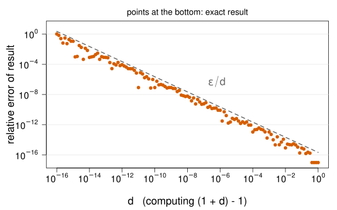
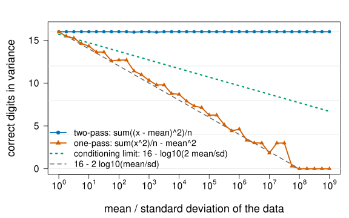
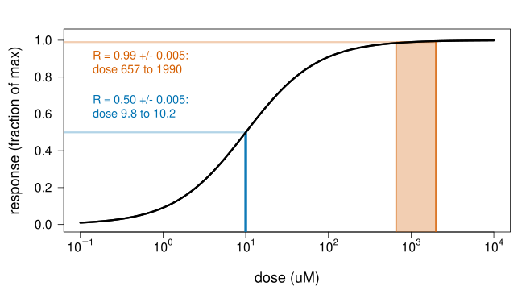
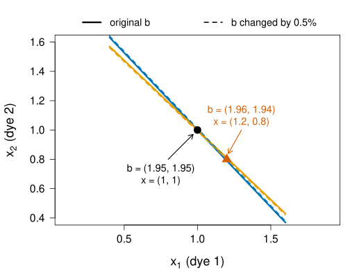

In How computers store numbers we saw that every double carries a tiny relative error, about 10^{-16}. Today: when does that tiny error become a large one, and whose fault is it, the problem’s or the method’s?
Absolute vs relative error, and why relative error counts correct digits.
Catastrophic cancellation: subtracting two nearly equal numbers.
The condition number\kappa of a problem: how much it amplifies relative errors in its input.
Stability of an algorithm: does it lose more digits than \kappa explains? Backward error in one slide.
Two cases: a well-behaved problem ruined by a bad formula (the one-pass variance), and a problem no formula can save (dose from a response near the plateau).
A variance that comes out as zero
Cut sites from a CUT&RUN experiment pile up around one transcription factor footprint on chromosome 1, near position 240 000 000, spread over a few bp.
set.seed(3)pos <-round(rnorm(1000, mean =2.4e8, sd =3)) # cut sites (bp)n <-length(pos)sum(pos^2) / n -mean(pos)^2# textbook one-pass formula# [1] 0sum((pos -mean(pos))^2) / n # centre first: two-pass# [1] 8.986159
Same formula on paper, \frac1n\sum x_i^2 - \bar x^2 = \frac1n\sum (x_i-\bar x)^2.
On the computer one gives 0 (every read at the same base?), the other gives \approx 9\ \text{bp}^2.
No warning, no NaN. Which one is right, and why does the other fail?
Absolute and relative error
For a true value x and an approximation \hat x:
\text{absolute error} = |\hat x - x|, \qquad
\text{relative error} = \frac{|\hat x - x|}{|x|}.
true x
measured \hat x
absolute
relative
stock solution
50 µM
51 µM
1 µM
0.02
dilute sample
0.0005 µM
0.00051 µM
0.00001 µM
0.02
The absolute errors differ by a factor 10^5; the relative errors are the same: both are 2 % off.
Relative error has no units and does not care about scale. It is the natural measure for anything that spans orders of magnitude (concentrations, counts, intensities).
Relative error fails when x = 0 or near it: then use absolute error.
Relative error counts correct digits
A relative error of about 10^{-k} means about kcorrect significant digits.
rel <-abs(3.1416- pi) / pirel# [1] 2.338435e-06-log10(rel) # number of correct digits# [1] 5.631075
3.1416 vs \pi = 3.14159265\ldots: five to six correct digits.
A double has \varepsilon \approx 2.2\times10^{-16}, so about 16 digits. That is the budget every computation starts with.
Today’s question: which operations spend that budget fast?
Catastrophic cancellation
Subtract two numbers that agree in their leading digits:
a <-1+1e-15# stored with relative error ~1e-16print(a, digits =17)# [1] 1.0000000000000011a -1# should be 1e-15# [1] 1.110223e-15(a -1-1e-15) /1e-15# relative error of the difference# [1] 0.110223
The subtraction itself is exact. The damage was done when a was stored: an error in the 16th digit of a is now in the 1st digit of a - 1.
The leading digits cancel; what is left is mostly the old rounding error. That is catastrophic cancellation.
Why: the error stays, the answer shrinks
If a and b each carry absolute error \approx \varepsilon |a|, then a - b carries the same absolute error, so
a = 1+d, b = 1: relative error \approx \varepsilon / d.
d = 10^{-8}: 8 digits left. d = 10^{-15}: barely 1.
Digits lost\approx \log_{10}\dfrac{|a|}{|a-b|}.

Cancellation with measured data
Two near-identical spot intensities, each measured with about 1 % error: treated a = 2010, control b = 2000.
a <-2010; b <-2000log2(a / b) # log2 fold change# [1] 0.007195501log2(1.01* a / b) # a measured 1 % high# [1] 0.02155079log2(0.99* a / b) # a measured 1 % low# [1] -0.007304068
A 1 % error in a moves the log fold change by 200 %, even flips its sign.
Floating point is innocent here: 16 digits are plenty. The measurement error is amplified by the same factor |a|/|a-b| = 201.
The ratio a/b = 1.005 is still known to 1 %. What cannot be known is how far it is from 1.
The condition number of a problem
A problem: compute y = f(x). Nudge the input by a small relative amount. By Taylor, f(x + \Delta x) \approx f(x) + f'(x)\,\Delta x, so
Example: (1 + 1e-15) - 1 gave 1.110223e-15. That is the exact answer for input 1 + 1.110223\times10^{-15}, which differs from the intended input by 1.1\times10^{-16}: backward error \approx \varepsilon. The 11 % forward error is all conditioning (\kappa \approx 10^{15}).
Back to the variance: an unstable algorithm
mean(pos)^2# the two terms being subtracted# [1] 5.76e+16
\frac1n\sum x_i^2 and \bar x^2 are both \approx 5.76\times10^{16} and agree in their first 15–16 digits. Their difference, 9, is 10^{-16} of each term: catastrophic cancellation.
Near 5.76\times10^{16}, doubles are spaced 8 apart, so the one-pass answer can only be a multiple of 8: here 0.
Conditioning of the variance itself (relative nudges to the data): \kappa \approx 2\,\bar x/s \approx 1.6\times10^{8}, so up to 8 digits lost, 8 left.
One-pass loses about 2\log_{10}(\bar x/s) \approx 16: twice what the problem forces. That is instability.
How many digits does one-pass lose?

Data with mean m and standard deviation 1. One-pass follows the grey line: 2 digits lost per factor 10 in m/s. Two-pass stays above the conditioning limit (green).
Counts around 10^8 with Poisson spread (s = 10^4): one-pass keeps only ~8 digits.
The fix: centre first
var(pos) * (n -1) / n # R's var() is two-pass (n - 1 scaling)# [1] 8.986159p0 <- pos - pos[1] # shift by any data valuesum(p0^2) / n -mean(p0)^2# one-pass is now harmless# [1] 8.986159
Variance is shift invariant. Subtracting a typical value first removes the large common part, so nothing big is left to cancel.
var() and numpy.var centre first. For streaming data use Welford’s running update, which also centres.
Check: recompute after shifting the data. A stable answer does not move.
Rewrite to avoid cancellation (1)
\sqrt{x+1} - \sqrt{x} for large x subtracts two nearly equal numbers. Multiply by the conjugate:
x <-1e15sqrt(x +1) -sqrt(x) # cancels# [1] 1.862645e-081/ (sqrt(x +1) +sqrt(x)) # adds: no cancellation# [1] 1.581139e-08
The problem is well-conditioned (\kappa \approx \tfrac12); the first formula is not stable. The rewrite turns a difference into a sum.
Rewrite to avoid cancellation (2): binding
Protein P + ligand L, dissociation constant K_d, ligand depletion. The bound complex C is the small root of C^2 - S\,C + PL = 0, with S = P + L + K_d.
P <-0.01; L <-0.01; Kd <-1e5# nM: 10 pM each, Kd = 100 uMS <- P + L + Kd(S -sqrt(S^2-4* P * L)) /2# textbook formula# [1] 1.004082e-092* P * L / (S +sqrt(S^2-4* P * L)) # rewritten# [1] 9.999998e-10
The textbook “-” root subtracts two numbers \approx 10^5 to get 10^{-9}: 2 correct digits. Rewrite: C = \dfrac{2PL}{S + \sqrt{S^2 - 4PL}}.
R = 0.99: \kappa = 100. A 0.5 % error in R becomes a factor-3 range in D.

No algorithm saves an ill-conditioned problem
K <-10# dose giving half response (uM)dose <-function(R) K * R / (1- R) # invert R = D / (K + D)dose(c(0.495, 0.5, 0.505))# [1] 9.80198 10.00000 10.20202dose(c(0.985, 0.99, 0.995))# [1] 656.6667 990.0000 1990.0000kappa_num(dose, 0.99)# [1] 100.001
The formula is exact and computed to 16 digits. The error comes from the data, amplified by \kappa.
Cures change the problem: dilute the sample into the steep part of the curve, measure more replicates, or report a lower bound (“D > 600 µM”).
Teaser: the condition number of a matrix
Two dyes with overlapping spectra: unmixing solves A\mathbf x = \mathbf b.
A <-matrix(c(1, 0.95,0.95, 1 ), nrow =2, byrow =TRUE)solve(A, c(1.95, 1.95))# [1] 1 1solve(A, c(1.96, 1.94)) # b off by 0.5 %# [1] 1.2 0.8kappa(A, exact =TRUE)# [1] 39

0.5 % change in \mathbf b\to 20 % change in \mathbf x: amplified about 40 times.
Matrices have a condition number too (kappa()): Pivoting, norms and conditioning.
Checklist: is my number trustworthy?
Estimate \kappa: by hand (|x f'/f|) or by nudging the inputs (kappa_num). Expect to lose \log_{10}\kappa digits of your data’s accuracy.
Look for subtractions of nearly equal numbers in your formula. Rewrite (conjugate, centring, log1p) or use a library routine.
Shift or rescale the data where the answer should not change; compare.
Check a limit you know (C \approx PL/K_d, variance \ge 0).
Impossible values (negative variance, probability > 1, a fold change of the wrong sign) are a symptom, not noise.
Summary
Relative error|\hat x - x|/|x| counts correct digits: \approx -\log_{10} of it. Doubles start with about 16.
Catastrophic cancellation: subtracting nearly equal numbers keeps the absolute error and shrinks the result; lose \log_{10}(|a|/|a-b|) digits.
Condition number\kappa = |x f'(x)/f(x)|: how much the problem amplifies relative input errors. Lose about \log_{10}\kappa digits.
Stability: an algorithm is stable if it loses no more than \kappa explains; backward stable if its answer is exact for a nearby input.
Well-conditioned problem + unstable algorithm (one-pass variance): rewrite or centre. Ill-conditioned problem (dose near the plateau): no algorithm helps; change the measurement.
Next, Convergence and cost: truncation vs rounding error, and how fast methods converge.